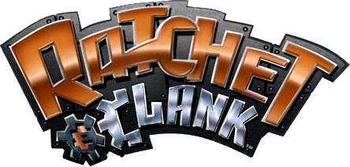
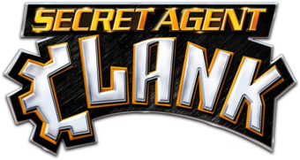
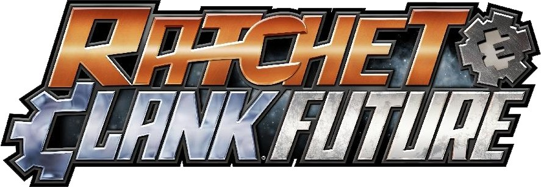
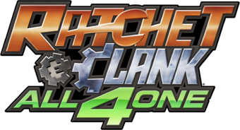

Ratchet & Clank(2002)
Ratchet & Clank is a third-person three-dimensional action platformer, in which the player controls Ratchet, a lombax mechanic from Veldin, who carries his robot friend Clank as a backpack. The two embark on an adventure to seek the help of intergalactic celebrity Captain Qwark in their fight to save the galaxy from Chairman Drek, a businessman who wants to create a new world for his people by extracting parts from other planets.
"Possibly the PS2's finest"
Original Release
- Published by Sony Computer Entertainment Europe Ltd.
- Developed by Insomniac Games, Inc.
- Released Nov, 2002 on Sony Playstation 2
- Genre: Action
- Perspective: 3rd Person
- Gameplay: Platform and Puzzle Elements
- Player(s): 1
The PS2 Era
Ratchet & Clank was first released on the Playstation 2 and quickly saw success, becoming one of Sony's main mascots throughout the 2000's, competing with only Sly Cooper, and Jak and Daxter.
The Original Trilogy
The Original Trilogy is what started it all. It's what brought Ratchet and Clank together, saw them grow into intergalactic heroes, and save the galaxy not once, not twice, but three times. Each adventure became more perilous than the last, as they stopped a planet destroying capitalist overlord in Ratchet & Clank(2002), saved the Bogon Galaxy from a ruthless genetic experiment gone wrong in Ratchet & Clank: Going Commando, and returned to their home to prevent a robotic evil genius from turning every last citizen into bloodthirsty robots in Ratchet & Clank: Up Your Arsenal.
Spin-Offs

Because of the trilogy's massive success, Insomiac Games tried to do something different by modifying the typical platforming experience with a more
hardcore shooter obstacle course type game. Ratchet: Deadlocked occured after the events of the original trilogy, and followed Ratchet as he was abducted by
an illegal game show in which contestants had to survive lethal obstacle courses and fight each other to the death.
Ratchet & Clank: Size Matters and Secret Agent Clank were outsourced to High Impact Games and developed hand-in-hand for the PSP
as Insomiac Games prepared to launch their next title for the upcoming Playstation 3. Although these games followed the traditional Ratchet & Clank
gameplay, many felt that they were too clunky and lacked the typical polish that the original trilogy had. This was partly due to the PSP not having a right
analog stick, leading to a clunky camera that was never fixed in the PS2 port.
The PS3 Era
When Ratchet and Clank were brought onto the PS3, Insomniac Games shifted to a more story-oriented experience. The technology of the PS3 allowed them to build a strong narrative around their new adventures.
The Future Saga
- Ratchet & Clank Future: Tools of Destruction
- Ratchet & Clank Future: Quest for Booty
- Ratchet & Clank Future: A Crack in Time
- Ratchet & Clank: Into the Nexus
The Future Saga revealed Ratchet to be the last of his race, left behind by those who were persecuted to the bitter end. They fought and won against
Emperor Tachyon, who transported him to the Polaris Galaxy in hopes of finding the Lombax Secret. After stopping history from repeating itself, Clank is taken
by a race known as the Zoni, keepers of time, to fulfill his role as the caretaker of the Universe. Not all is as it seems, as Dr.Nefarious, Ratchet and Clank's
old rival from Up Your Arsenal, returns to misuse Clank's powers to turn back time and rewrite history so that he wins.
Althoug Into the Nexus didn't directly follow the Future Saga's storyline, it served as an epilogue, re-emphasizing the choices that the duo had made
throughout their journeys and saw them face those consequences.
Into the Nexus was fully intended to be the conclusion to the Ratchet & Clank universe as a whole until its reboot on the upcoming PS5
(as of 09/20)
Spin-Offs
Before Into the Nexus, Insomiac Games tried making the franchise into a couch co-op journey. All 4 One was a 4-player action platformer that was more linear than most entries and featured puzzles that took 2 or more people to solve. It also saw the duo team up with intergalactic president Captain Qwark and their archnemesis Dr.Nefarious. Full Frontal Assault was a 3rd person tower-defense strategy game in which the player would defend their nodes from oncoming enemies by upgrading defense, turrets, and their own weapons to stop Stuard Zurgo from taking over the Planetary Defence Center.
The Future of Ratchet & Clank
"Everyone stay calm! Something epic is happening!"
`Ratchet & Clank will return on the Playstation 5 in 2021